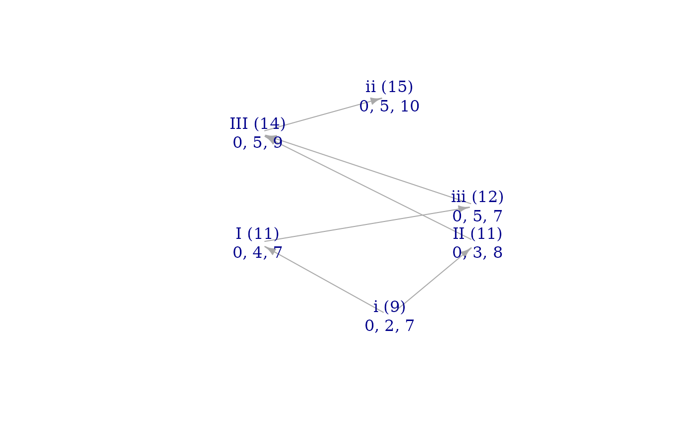

As for other hyperplane arrangements, it is useful to consider the number of entries which equal 0 in an anaglyph signvector. However, such entries can represent three different types of regularity: regularity within the first set, regularity within the second set, or regularity in the comparison between them. This function distinguishes between those three types of hyperplanes.
Value
A vector with three entries, representing regularities in the first set, regularities in the second set, and regularities between them.
Examples
maj <- c(0, 4, 7)
sus2 <- c(0, 2, 7)
anazero_fingerprint(c(maj, sus2))
#> [1] 0 1 2
# The first entry shows that the major triad has 0 regularities.
# This is equivalent to:
countsvzeroes(maj)
#> [1] 0
# The second entry shows that the sus2 trichord has 1 regularity.
# This is equivalent to:
countsvzeroes(sus2)
#> [1] 1
# The final entry shows that the major triad's perfect fifth
# equals the size of the *two* perfect fifths in the sus2 trichord.
# We can visualize the whole set of relationships using a brightness
# graph:
brightnessgraph(maj, sus2)
